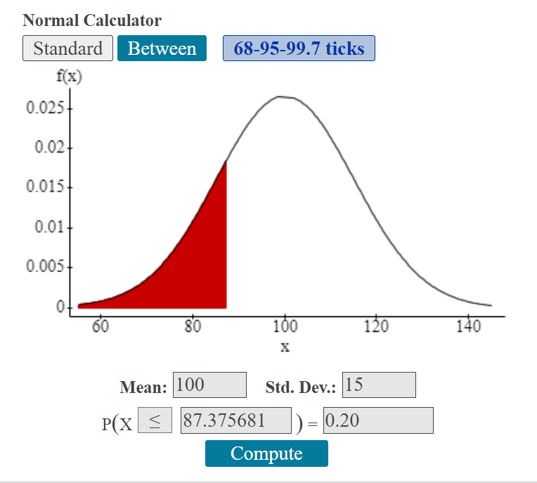
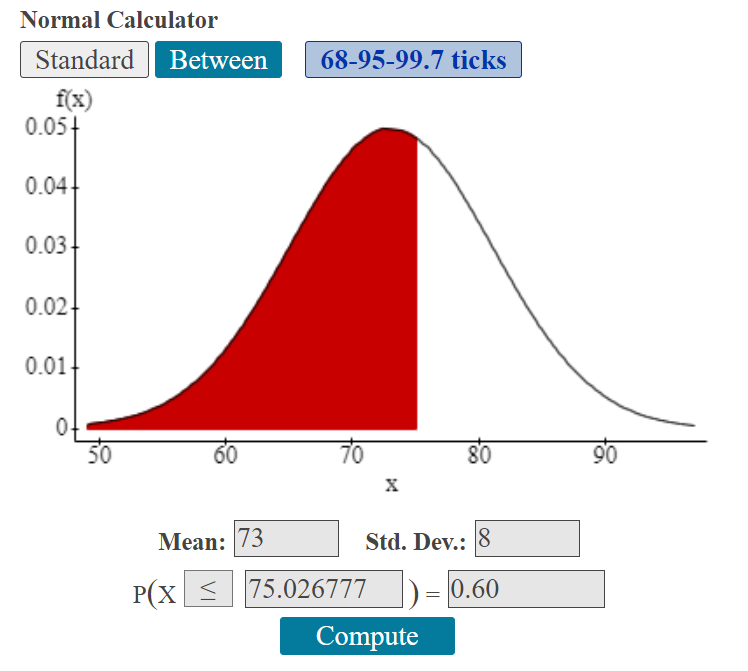
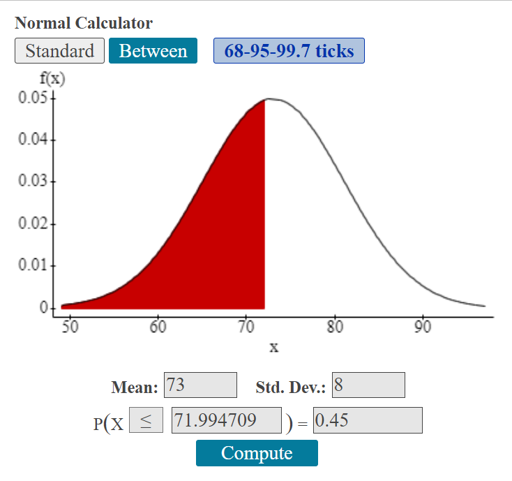

3.2 Normal Distributions
The Normal Distribution is a continuous probability distribution with the following properties:(fill in the blanks)
- The __________
mean , __________median and __________mode are equal. - The normal curve is __________
bell shaped and is symmetric about the __________mean . - The total area underneath the curve is equal to __________
1 . - The normal curve approaches, but never touches, the __________
x-axis as it extends away from the mean. - Between z=-1 and z=1, the graph curves __________
downward . Everywhere else, the graph curves __________upward . - The probability that a random variable assumes a value between a and b is equal to ______________________________
the area under the curve bounded by a and b .
- Identify the following variables/distributions as discrete or continuous:
- The weight of fire fighters in a large fire department
Continuous
- The number of heads tossed when tossing a coin 30 times
Discrete
- The weight of fire fighters in a large fire department
- Estimate the standard deviation of the distribution:

\(\sigma \approx 0.5\)
- If z = -1.53, what is area to the right of the z score?
Mathematical Translation: \(P(z>-1.53)=\)
0.9370 - If z = -1.53, what is area to the left of the z score?
Mathematical Translation: \(P(z<-1.53)=\)
0.0630 - Mensa is an organization for people with high IQs. To qualify as a member, you must score at least 2.05 standard deviations above the mean on an approved intelligence test. If the entire population takes an approved intelligence test, approximately what percent of people are eligible to join Mensa?
\(P\left(x\geq2.05\right)=0.0202\), or about 2% - The distribution of IQ scores is normally distributed with a mean of 100 and a standard deviation of 15. An Oregon couple claimed their two children were taken away from them because they scored too low on an IQ test. She scored 72 and he scored 66. Find the probability that a randomly selected IQ score will be below 73
\(\mu = \)
100 \(\sigma = \)
15 \(z_{73}=\frac{73-100}{15}=-1.8\)
\(P(x \lt 73)=P(z \lt -1.8)=0.0359\)
Writing your final statement:If one __________ is randomly selected, the probability the/their __________ is lessthan/greaterthan/between____________is approximately equal to ______.
If one person’s IQ score is randomly selected, the probability their score is less than 73 is approximately equal to 0.0359 or 3.59%.
- Are the IQ scores of the couple unusual? (Hint: Calculate z-score for each.)
\(z_{72}=\frac{72-100}{15}=-1.87\)
\(z_{66}=\frac{66-100}{15}=-2.27\)
Her IQ is not unusual, but his is unusual.
- To determine the average wait time at Taco Bell in the Miami area, 16 graduate students randomly selected 16 Taco Bell stores. Each student visited a Taco Bell store at 12:15 pm and ordered a crunchy beef taco, a burrito supreme, and a soda. The wait time to receive the meal was recorded for each restaurant. The distribution is normal with a mean of 22.4 minutes and a standard deviation of 6.2 minutes.
- If one Taco Bell is randomly selected, what is the probability the wait time will be more than 20 minutes?
\(z=\frac{20-22.4}{6.2}=-0.3871\)
\(P(x>20)=P(z>-0.3871)=.6506\)
If one Taco Bell is randomly selected, the probability the student's wait time was more than 20 minutes is approximately equal to 0.6506 or 65.06%.
- If one Taco Bell is randomly selected, what is the probability the wait time will be between 25 minutes and 35 minutes?
\(z_{25}=\frac{25-22.4}{6.2} \approx 0.4194\)
\(z_{35}=\frac{35-22.4}{6.2} \approx 2.0322\)
\(P(25 \lt x \lt 35)=P(.419 \lt z \lt 2.0322)=.3164\)
If one Taco Bell is randomly selected, the probability the student's wait time was between 25 and 35 minutes is approximately equal to 0.3164 or 31.64%.
- If one Taco Bell is randomly selected, what is the probability the wait time will be more than 20 minutes?
- IQ scores are normally distributed with a mean of 100 and a standard deviation of 15.
- What IQ score separates the bottom 20% from the top 80%?
20% cumulative area to the left
\(P_{20} = P(x\le\) \( ) = 0.20\)
IQ score 87.38

- What IQ score separates the top 15% from the bottom 85%?
85% cumulative area to the left.
\(P_{85} = P(x\le \) \() = 0.85\)
IQ score 115.55

- What IQ score separates the bottom 20% from the top 80%?
- Weights of a breed of dog are normally distributed with a mean of 73 lbs and a standard deviation of 8 lbs.
- What weight separates the smallest 60% of the dogs from the heavier 40%?
60% cumulative area to the left.
\(P_{60} = P(x\le\) \() = 0.60\)
75.03 lbs

- What weight separates the heavier 55% from the lightest 45%?
45% cumulative area to the left.
\(P_{45} = P(x\le\) \() = 0.45\)
71.99 lbs

- What weight separates the smallest 60% of the dogs from the heavier 40%?
- A manufacturer of bulbs for movie projectors finds that the lives of the bulbs are normally distributed with a mean of 61 hours and standard deviation of 6.3 hours. The manufacturer will guarantee the bulbs so that only 3% will be replaced because of failure before the guaranteed number of hours. For how many hours should the bulbs be guaranteed?
For the number of hours, the cumulative area from the left is equal to 0.03.
\(P_{3} = P(x\le \) \() = 0.03\)
The bulbs should be guaranteed for 49.15 hours.
- Pulse Rates of adults are normally distributed with a mean of 73 bpm and a standard deviation of 8 bpm. According to one company’s health screening criteria, 8% of adults would be rejected because they have readings that are too high and 2% would be rejected because they have readings that are too low. Find the two readings that are the cutoff values separating the rejected applicants from the others.
\(P_{2} = P(x\le\) \() = 0.02\)
56.6 bpm
\(P_{92} = P(x\le\) \() = 0.92\)
84.2 bpm
The applicants with pulse rates between 56.6 bpm and 84.2 bpm will not be rejected on the basis of pulse rate.